§ 3.09 Bezeichnung der Schleppverbände in Fahrt(Anlage 3 Bild 4, 5, 6, 7, 8, 9, 10)
Rheinschiffahrtspolizeiverordnung
1. | An der Spitze eines Schleppverbandes in Fahrt muß das Fahrzeug mit Maschinenantrieb führen: | ||
- bei Nacht: | |||
a) | außer dem Topplicht und den Seitenlichtern nach § 3.08 Nr. 1 Buchstabe a und b ein zweites Topplicht; dieses muß etwa 1,00 m unter dem ersten Topplicht, jedoch nach Möglichkeit mindestens 1,00 m höher als die Seitenlichter gesetzt werden; | 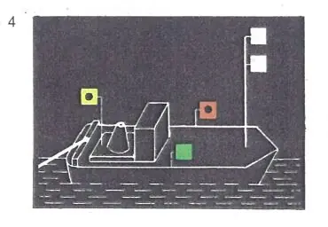 | |
b) | statt des Hecklichts nach § 3.08 Nr. 1 Buchstabe c ein gelbes Hecklicht an geeigneter Stelle und in ausreichender Höhe, damit es von dem nachfolgenden Anhang gesehen werden kann; | ||
- bei Tag: | |||
einen gelben Zylinder, der oben und unten mit je einem schwarzen und je einem weißen Streifen - letztere an den äußeren Enden - eingefaßt ist. Der Zylinder muß auf dem Vorschiff senkrecht und so hoch gesetzt werden, daß er von allen Seiten sichtbar ist. | 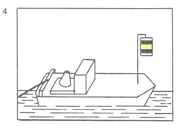 | ||
2. | Hat ein Schleppverband an der Spitze mehrere Fahrzeuge mit Maschinenantrieb, die nebeneinander fahren, sei es längsseits gekuppelt oder nicht, muß jedes dieser Fahrzeuge führen: | ||
- bei Nacht: | |||
ein drittes Topplicht; dieses muß etwa 2,00 m unter dem ersten Topplicht, jedoch nach Möglichkeit mindestens 1,00 m höher als die Seitenlichter gesetzt werden; | 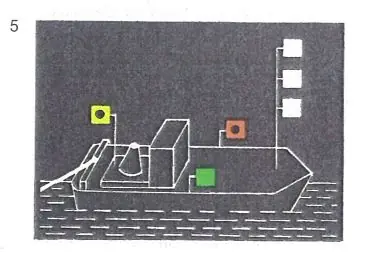 | ||
- bei Tag: | |||
den Zylinder nach Nummer 1. | 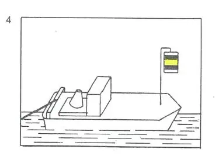 | ||
Das gleiche gilt für alle Fahrzeuge mit Maschinenantrieb, die gemeinsam ein Fahrzeug, einen Schwimmkörper oder eine schwimmende Anlage bugsieren. | |||
3. | Die geschleppten Fahrzeuge eines Schleppverbandes in Fahrt müssen führen: | ||
- bei Nacht: | |||
ein weißes helles, von allen Seiten sichtbares Licht, das mindestens 5,00 m über der Ebene der Einsenkungsmarken gesetzt werden muß. Diese Höhe darf bis auf 4,00 m verringert werden, wenn die Länge des Fahrzeugs 40,00 m nicht überschreitet; | 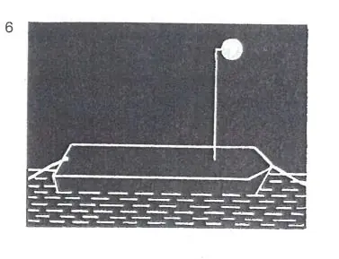 | ||
- bei Tag: | |||
einen gelben Ball an einer geeigneten Stelle und so hoch, daß er von allen Seiten sichtbar ist. | 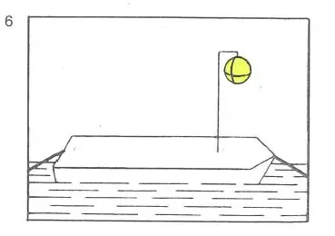 | ||
Wenn jedoch | |||
a) | eine Anhanglänge des Verbandes 110,00 m überschreitet, muß sie bei Nacht zwei Lichter nach Satz 1 führen, und zwar eines auf der vorderen und eines auf der hinteren Hälfte, | 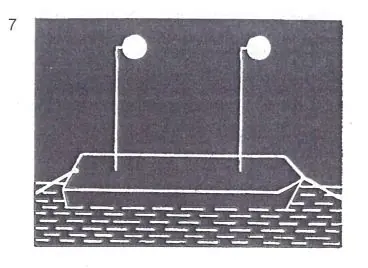 | |
b) | eine Anhanglänge des Verbandes aus mehr als zwei längsseits verbundenen Fahrzeugen besteht, sind die Lichter oder die Bälle nach Satz 1 nur von den beiden äußeren Fahrzeugen zu führen. | 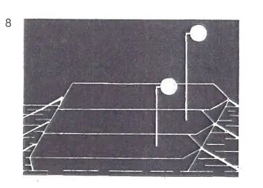 | |
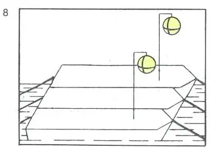 | |||
Die Lichter und Bälle aller geschleppten Fahrzeuge eines Verbandes sind so zu setzen, daß sie sich möglichst in gleicher Höhe über dem Wasserspiegel befinden. | |||
4. | Das Fahrzeug oder die Fahrzeuge, die die letzte Anhanglänge eines Schleppverbandes in Fahrt bilden, müssen bei Nacht führen: | ||
a) | das Licht nach Nummer 3 oder das Topplicht nach § 3.08 Nr. 1 Buchstabe a; | 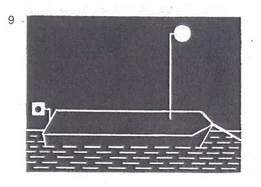 | |
b) | das Hecklicht nach § 3.08 Nr. 1 Buchstabe c. Bilden mehr als zwei längsseits verbundene Fahrzeuge den Schluß des Verbandes, brauchen nur die beiden äußeren Fahrzeuge dieses Hecklicht zu führen. | 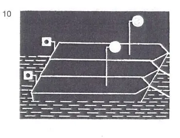 | |
5. | Auf den Reeden brauchen Schleppverbände, die aus einem Fahrzeug mit Maschinenantrieb und einer einzigen Anhanglänge bestehen, die Tagbezeichnung nach diesem Paragraphen nicht zu führen. | ||
6. | Dieser Paragraf gilt nicht für Kleinfahrzeuge, die ausschließlich Kleinfahrzeuge schleppen, und nicht für geschleppte Kleinfahrzeuge; für diese Kleinfahrzeuge gilt § 3.13 Nr. 2 und 3. |